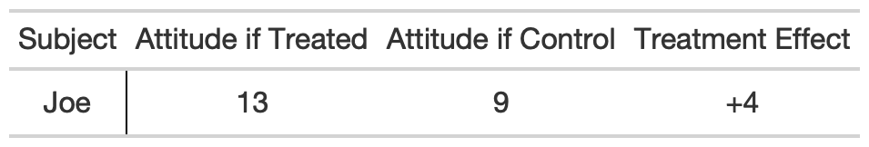

Chapter 3 Rubin Causal Model
The Rubin Causal Model (RCM) is an approach to the statistical analysis of cause and effect based on the framework of potential outcomes, created by Donald Rubin. The name “Rubin Causal Model” was first coined in Holland (1986).
3.1 What is a causal effect?
 FIGURE 3.1: This study was conducted by Ryan Enos.
FIGURE 3.1: This study was conducted by Ryan Enos.
The Rubin Causal Model (RCM) is based on the idea of potential outcomes. For example, let’s use a social experiment that looked at exclusionary attitudes of commuters on a train platform. The commuters were exposed to one of two possible conditions, and then their attitudes towards immigrants were measured. One condition was being on a train platform near individuals speaking Spanish. The other was being on a train platform with no one in the vicinity. To calculate the causal effect of having Spanish-speaking people nearby, we need to compare the outcome for an individual in one alternative future (with Spanish-speaking people) to another (without Spanish-speaking people). Since it is impossible to see both potential outcomes at once, one of the potential outcomes is always missing. This dilemma is the “fundamental problem of causal inference.”
In most circumstances, we are interested in comparing two futures, one generally termed “treatment” and the other “control.” These labels are somewhat arbitrary. The difference between the potential outcome under treatment and the potential outcome under control is called a “causal effect” or a “treatment effect.” The scenario that didn’t actually happen, and thus that we didn’t observe, is called a “counterfactual.”
Thus, according to the RCM, the causal effect of being on the platform with Spanish-speaking people is the difference between what your attitude would have been under “treatment” (with Spanish-speaking people) and “control” (no Spanish-speaking people). Low numbers indicate liberal attitudes towards immigrants and high numbers indicate more conservative attitudes. If your attitude towards immigrants would have been a 13 with Spanish-speaking people and a 9 without Spanish-speaking people, then the causal effect of being on a platform with Spanish-speaking people is a 4-point increase in your attitude.
3.1.1 Potential outcomes: introduction to the Rubin Table
Suppose that Joe is one of the commuters surveyed in this social experiment. If we were omniscient, we would know the outcomes for Joe under both treatment (with Spanish-speaking people) and control (no Spanish-speaking people). The causal effect, or treatment effect, is the difference between these two potential outcomes. We can present this with the following table of potential outcomes, which we will call a Rubin Table:

From this table we only know the causal effect on Joe. Everyone else in the study might have their attitude score go down if treated (more liberal). However, regardless of what the causal effect is for the other subjects, the causal effect for Joe is a shift towards a more conservative attitude relative to what his attitude would have been had Spanish-speaking people not been on his platform.
In a Rubin Table, mathematical notation can also be used to describe potential outcomes.
\(Y_{t}(u)\) is the same as ‘Attitude if Treated’ \(Y_{t}(u)\) is Joe’s attitude toward immigrants if there are Spanish-speaking people on his platform (treated). In general, this notation expresses the potential outcome which results from a treatment, \(t\), on a unit, \(u\).
\(Y_{c}(u)\) is the same as ‘Attitude if Control’ Similarly, \(Y_{c}(u)\) is the effect of a different treatment, \(c\) or control, on a unit, \(u\). In this case, \(Y_{c}(u)\) is Joe’s attitude if there were no Spanish-speaking people on his platform.
\(Y_{t}(u)-Y_{c}(u)\) is the same as ‘Treatment Effect’ \(Y_{t}(u)-Y_{c}(u)\) is the causal effect pf there being Spanish-speaking people on the platform. Thus, Joe would have an attitude score of \(13\) if there were Spanish-speaking people and \(9\) if there were not; the causal effect of the presence of Spanish-speaking people is is \(4\).
3.1.2 Estimands
Let’s look again at our basic Rubin Table for Joe:
| $$\mathbf{Subject}$$ | $$Y_t(u)$$ | $$Y_c(u)$$ | $$Y_t(u) - Y_c(u)$$ |
|---|---|---|---|
| Joe | 13 | 9 | +4 |
We have Joe’s potential outcome under treatment, Joe’s potential outcome under control, and the difference between the two. The difference is generally called the “causal effect” or “treatment effect.” But it is in fact only one possible causal variable we might be interested in. We could also calculate the ratio of potential outcomes for Joe:
| $$\mathbf{Subject}$$ | $$Y_t(u)$$ | $$Y_c(u)$$ | $$Y_t(u) / Y_c(u)$$ |
|---|---|---|---|
| Joe | 13 | 9 | 13/9 |
Or the percentage change in his potential outcomes:
| $$\mathbf{Subject}$$ | $$Y_t(u)$$ | $$Y_c(u)$$ | $$(Y_t(u) - Y_c(u)) / Y_c(u) \times 100$$ |
|---|---|---|---|
| Joe | 13 | 9 | +44.4% |
Now, let’s consider a larger sample of patients:
| $$\mathbf{Subject}$$ | $$Y_t(u)$$ | $$Y_c(u)$$ | $$Y_t(u) - Y_c(u)$$ |
|---|---|---|---|
| Joe | 13 | 9 | +4 |
| Mary | 11 | 11 | 0 |
| Sally | 11 | 10 | +1 |
| Bob | 9 | 12 | -3 |
| James | 5 | 4 | +1 |
From this Rubin Table, there are many possible values we might calculate. Here are just a sampling:
- One potential outcome for one person, such as Joe’s potential outcome under treatment (\(13\)).
- A causal effect for one person, such as for Mary. This is the difference between the potential outcomes, which we have provided as its own column (\(11 - 11 = 0\)).
- The most positive causal effect. Here, that is \(+4\), from Joe (\(13 - 9 = +4\)).
- The most negative causal effect. Here, that is \(-3\), from Bob (\(9 - 12 = -3\)).
- The median causal effect (\(+1\)).
- The median percentage change. To do this, calculate the percentage change for each person. You’ll get 5 percentages: \(+44.4\%\), \(0.0\%\), \(+10.0\%\), \(-25.0\%\), and \(+25.0\%\). The median is \(+10.0\%\).
- The total number of people for whom the causal effect is positive: \(3\).
- And so on. There are a lot of things one might care about!
One very common value we might care about has its own name, the average treatment effect. The average treatment effect (often abbreviated ATE) is the mean of all the causal effects. Here, the mean is \(+0.6\).
An estimand is not the number value calculated, but rather the variable you want to understand from your data. So far, we have been able to calculate all of these different values through simple arithmetic. But remember that in a realistic Rubin table we will have a bunch of missing data! This will require us to estimate. An estimand is some variable in the real world that we are trying to measure. All of the variables we calculated above are examples of estimands we might be interested in. For example, we might be interested in the average treatment effect of the train experiment. The estimand in that case would be the ATE.
Remember that the data we actually observe looks something like this:
| $$\mathbf{Subject}$$ | $$Y_t(u)$$ | $$Y_c(u)$$ | $$Y_t(u) - Y_c(u)$$ |
|---|---|---|---|
| Joe | 13 | ? | ? |
| Mary | 11 | ? | ? |
| Sally | ? | 10 | ? |
| Bob | ? | 12 | ? |
| James | 5 | ? | ? |
Question marks are responses that could not be observed. The Fundamental Problem of Causal Inference5 Holland 1986. is that directly observing unit-level causal effects is impossible. If we don’t have all the values in our table, how do we calculate anything?
3.2 How do we fill in the missing values?
How can we fill in the question marks? Because of the fundamental problem of causal inference, we can never know the missing values. Because we can never know the missing values, we must make assumptions. “Assumption” just means that we need a “model,” and all models have parameters.
One model might be that the causal effect is the same for everyone. There is a single parameter, \(\tau\), which we then estimate. Once we have an estimate, we can fill in the Rubin Table because, knowing it, we know what the unseen potential outcome is for each person. Now our estimand is \(\tau\); whether this is a sensible estimand depends on how close the real world conforms to our assumption that the causal effect is the same for everyone.
We’ll talk more about how you might calculate \(\tau\) later. Right now, just know that if you had an estimate for \(\tau\), you could add it to the observed value of every observation in the control group (or subtract it from the observed value of every observation in the treatment group), and thus fill in all the missing values.
A second model might be that the causal effect is the same within categories. For example, perhaps it is \(\tau_1\) for Democrats and \(\tau_2\) for Republicans. A third model might be that the causal effect is a number \(\tau\) multiplied by age: \(\tau \times age\). The key concept is that we can’t make any progress unless we make some assumptions. That is an inescapable result of the fundamental problem of causal inference. So we make some assumptions, which give us some models.
Note that some estimands may not require filling in all the question marks in the Rubin Table. For example, we’ll see that with randomized assignment to treatment, we can get a good estimate of the average treatment effect even without filling in every question mark—the average treatment effect is just a single number.
If you wanted, however, to use your estimate of the average treatment effect to fill in the missing individual treatment effects, you would need an additional assumption, such as that the treatment effect is constant \(\tau\) for everyone.
3.2.1 Average treatment effect
The average treatment effect is the average difference in potential outcomes between the treated group and the control group. As we noted before, this is a popular estimand. Why?
- There’s an obvious estimator for this estimand: the difference in observed outcomes between the treated group and the control group.
- If treatment is randomly assigned, the estimator is unbiased: you can be pretty confident in the estimate if you have a large enough treatment and control group.
- If you are willing to assume that the causal effect is the same for everyone (a big assumption!), you can use your estimate of the ATE to fill in the missing individual values in your Rubin Table.
Note that just because the ATE is a convenient estimand doesn’t necessarily mean that it is a useful one. In particular, consider point #3. For example, let’s say the treatment effect varies dependent on party. For Democrats there is a strong negative effect, but for Republicans there is a small positive effect. However, the average treatment effect for the whole sample, even if you estimate it correctly, will be a single negative number (since the negative effect for Democrats is larger than the positive effect for Republicans). So while our model to estimate the ATE is simple and thus alluring—with randomized treatment assignment, a difference in means will do the trick—don’t assume that it’s always the right model for your problem.
Let’s now walk through how we would estimate the ATE in our train example.
| $$\mathbf{Subject}$$ | $$Y_t(u)$$ | $$Y_c(u)$$ | $$Y_t(u) - Y_c(u)$$ |
|---|---|---|---|
| Joe | 13 | ? | ? |
| Mary | 11 | ? | ? |
| Sally | ? | 10 | ? |
| Bob | ? | 12 | ? |
| James | 5 | ? | ? |
The simplest way to estimate the ATE is to take the mean of the treated group (\(9.67\)) and the mean of the control group (\(11.0\)) and then take the difference in those means (\(-1.33\)). We’ll call this estimate of the ATE \(\widehat{ATE}\), pronounced “ATE-hat.”
So estimating the ATE is easy. But is our \(\widehat{ATE}\) a good estimate of the actual ATE? After all, if we knew all the missing values in the Rubin Table, we could calculate the ATE perfectly. But those missing values may be wildly different from the observed values. Consider this unobservable true Rubin Table:
| $$\mathbf{Subject}$$ | $$Y_t(u)$$ | $$Y_c(u)$$ | $$Y_t(u) - Y_c(u)$$ |
|---|---|---|---|
| Joe | 13 | 11 | +2 |
| Mary | 11 | 9 | +2 |
| Sally | 12 | 10 | +2 |
| Bob | 14 | 12 | +2 |
| James | 5 | 3 | +2 |
‘Actual ATE’ refers to the average treatment effect we would calculate if we knew all potential outcomes. This is of course not possible due to the Fundamental Problem of Causal Inference, however we will pretend we know in order to highlight potential problems with estimating ATE. In this example, there is indeed a single causal effect for everyone: \(+2\). Note that the observed values are all the same, but the unobserved values were such that our estimated ATE, \(-1.33\), is pretty far from the actual ATE, \(+2\).
We’ll consider in a little bit when it is reasonable to assume that our estimate of the ATE is a good one. (The best way, as we’ll see, is randomized assignment to treatment.)
But for now, let’s assume we have a good estimate. How can we use that to fill in the missing values in the Rubin Table? Well, we’ll need another assumption: that there’s one treatment effect, \(\tau\), that is the same for everyone. Let’s fill in our missing values is by adding \(\widehat{ATE}\) to the observed value under control (for units in the control group) or by subtracting \(\widehat{ATE}\) from the observed value under treatment (for units in the treatment group), like so:
| $$\mathbf{Subject}$$ | $$Y_t(u)$$ | $$Y_c(u)$$ | $$Y_t(u) - Y_c(u)$$ |
|---|---|---|---|
| Joe | 13 | 14.33 | -1.33 |
| Mary | 11 | 12.33 | -1.33 |
| Sally | 8.67 | 10 | -1.33 |
| Bob | 10.67 | 12 | -1.33 |
| James | 5 | 6.33 | -1.33 |
Note that for some estimands, filling in the same causal effect for everyone would be nonsensical. For example, let’s say you were interested in the lowest attitude score under treatment. That’s not an unreasonable thing to want to know! But assuming that everyone has the same causal effect means that your estimate of the lowest potential attitude score is either a) the smallest observed treatment value or b) the smallest observed control value minus your estimate of the ATE, whichever is smaller. This clearly isn’t a reasonable estimate of the lowest attitude score under treatment! Thus, we need a different model if we have a different estimand.
In general, do we think that if Joe wasn’t on the platform with Spanish-speaking people, his attitude toward immigrants would be exactly \(14.33\)? Of course not! We have some uncertainty around these numbers. There are two main sources of uncertainty we have to take into account when making a prediction for Joe:
- Uncertainty in estimating the ATE. Even if treatment is randomly assigned, and thus \(\widehat{ATE}\) is an unbiased estimate of ATE, we still may not have a very precise estimate if our sample is small. With this miniscule sample (five subjects!), the uncertainty might be gigantic, perhaps something like \((-3, 2)\), which would lead to a prediction for Joe of \((10, 15)\). As we get a larger sample size, this uncertainty decreases.
- Individual Variation. Even if we have a perfect estimate of the average treatment effect, it still may be the case that the effect for Joe is higher or lower than the average. We can assume this away if we say that the treatment effect is a constant \(τ\) for everyone, but that is not likely to be true in the real world – and this source of uncertainty does not go away simply by collecting more observations. So with a large sample, let’s say that we calculated a confidence interval around \(\widehat{ATE}\) of \((-1.66, -1)\), leading to an interval for Joe’s outcome under control of \((14.66, 14)\). The uncertainty due to individual variation may still be a great deal greater – say \((13, 15)\). These numbers are simply illustrative, but they highlight an important point: even if you have a good estimate of the ATE, you should still be much more uncertain about the causal effect for any particular individual.
The main takeaway is that we can get rid of #1 by collecting more data, but the only way to get rid of #2 is through making assumptions, potentially very strong ones.
We may not just be interested in the effect on Joe, a person in our sample, but on Tyrone, for whom we observe neither potential outcome. Even if we have a good estimate of the ATE for this sample, it may be a bad estimate of the ATE for the population if not all people have the same chance of being included in our sample. So reducing our uncertainty about Joe may still not answer the question we really care about. There is still a lot of missing data.
3.2.2 Heterogenous Treatment Effects
Let’s consider the second main source of uncertainty which we describe as individual variation. In the train study, all of the individuals surveyed are different in many different ways, for example gender, income, and age. Therefore, our study population is heterogeneous, because all of the subjects are not the same. When we estimate ATE, we are making assumptions that there is a similar treatment effect for all subjects in the study despite the heterogeneity of our sample.
There will inevitably be some random variation of treatment effect for individuals in a study. The effect on an individual, like Joe, may be different than the treatment effect on another individual that is seemingly very similar to Joe. This is one example of a heterogeneous treatment effect.
Another example of a heterogeneous treatment effect is when the variation in individual treatments are non-random and correlated with some factor. For example, maybe we think that the treatment effect varies depending on the gender of an individual. In this case, gender and treatment status are two variables which both have impact on the treatment effect. The two variables interact, influencing the treatment effect. In other words, the interaction effect of these two variables gives us a heterogeneous treatment effect.
So, a heterogeneous treatment effect can both explain individual variation, as well as variation between groups determined by some other variable. We will learn to deal with heterogeneous treatment effects in later chapters, however it is worth keeping in mind how assumptions of homogeneity can impact our understanding of treatment effect.
3.3 Missing data
3.3.1 Everything is a missing data problem
It’s worth discussing in general the problem of missing data. Why is that? Not being able to observe multiple counterfactuals is just one example of missing data. There are in fact many other potential sources of missing data. This missing data problem is what creates the need for statistical inferences. If the data were not missing, inference would not be needed.
Let’s explore another common source of missing data. For example, say that before you run the train experiment, you want to know the average attitude towards immigrants of all United States adults. At first, this seems like an easy problem—there’s nothing causal here! If you knew the true values, you could build a dataset like this:
| Person | Attitude |
|---|---|
| Person 1 | 13 |
| Person 2 | 11 |
| Person 3 | 9 |
| ... | ... |
| Person N | 10 |
Then, your answer is simply the average of all the values.
But do we have this table? No! What we actually have is this:
| Person | Attitude |
|---|---|
| Person 1 | ? |
| Person 2 | ? |
| Person 3 | ? |
| ... | ... |
| Person N | ? |
In reality, we don’t know the attitude towards immigrants of any United States adults. That is, we have a lot of missing data.
But maybe we could survey 1,000 people on their attitudes towards immigrants, and get a table that looks like this:
| Respondent | Attitude |
|---|---|
| Respondent 1 | 13 |
| Respondent 2 | 9 |
| Respondent 3 | 11 |
| ... | ... |
| Respondent 1,000 | 10 |
By surveying 1,000 people on their attitudes towards immigrants we now have some values to work with. This, however, does not solve the missing data problem. We are likely interested in the causal effect in general, not just for our 1,000 person sample. We’ll need to think about whether our sample is representative of the full population. For the vast majority of US adults we still have no value. This is the second of the two most common sources of missing data:
- For the units in our sample, we only see one potential outcome
- For the units outside our sample, we see no potential outcomes
3.3.2 The infinite Rubin Table: many kinds of missing data
A true Rubin Table has an infinite number of rows, and therefore an infinite amount of missing data. Such a reality is unworkable, so we make assumptions to reduce the true problem to something more manageable.
Let’s start by looking at what kinds of missing data make up the infinite Rubin Table. For example, say we only care about the causal effect of this experiment on Joe. Do we only care about his attitude right after the experiment? No! We also care about Joe’s potential outcomes one year from now, two years from now, and so on.
So our full Rubin Table includes people we know (Joe) and people we don’t (for example, Tyrone), both now and in the future:
| $$\mathbf{Subject}$$ | $$Y_t(u)$$ | $$Y_c(u)$$ | $$Y_t(u) - Y_c(u)$$ |
|---|---|---|---|
| Joe this year | 13 | ? | ? |
| Joe next year | ? | ? | ? |
| Joe two years from now | ? | ? | ? |
| Tyrone this year | ? | ? | ? |
| Tyrone next year | ? | ? | ? |
| Tyrone two years from now | ? | ? | ? |
| ... | ? | ? | ? |
| Person n at time t | ? | ? | ? |
In fact, because time is continuous, there is a row for Joe now, Joe one second from now, Joe one day from now and so on. The Rubin Table extends downward forever. Thus, in order to estimate any causal effect, we need assumptions, so we aren’t dealing with an infinite table.
The most obvious way to eliminate some rows from the table is to assume the causal effect for Joe now is the same as all the ones for Joe in the future. Is that plausible? Sort of. Joe now and Joe in one second are pretty similar! Joe now and Joe in 30 years are less so. Unfortunately, there’s no magic way to get a good estimate of every missing value in the infinite Rubin Table! But through some assumptions, we can reduce the true problem to the problem we were dealing with before.
Not only can we extend the Rubin Table by adding people not in our sample to the rows, but we can also add additional treatments to the columns. Let’s go back to the original five people in our sample. What if we also wanted to test the causal effect of another language being spoken on the platform? We’ll call the original treatment \(t\) and the new treatment \(t'\).
| $$\mathbf{Subject}$$ | $$Y_t(u)$$ | $$Y_{t'}(u)$$ | $$Y_c(u)$$ |
|---|---|---|---|
| Joe | 13 | ? | ? |
| Mary | 11 | ? | ? |
| Sally | ? | ? | 10 |
| Bob | ? | ? | 12 |
| James | 5 | ? | ? |
Note that for Joe, we now have three causal effects we can estimate: the difference between the original treatment and the new treatment, the difference between the original treatment and control, and the difference between the new treatment and control. And that’s just when looking at differences! Recall there are many other potential estimands we could be interested in, such as ratios, percent changes, and so on.
Even if you have just one language you are testing, there still could be multiple treatments. For example, the duration the commuter is on the platform with the Spanish-speaking people:
| $$\mathbf{Subject}$$ | $$Y_{\text{1 minute}}(u)$$ | $$Y_{\text{5 minutes}}(u)$$ | $$Y_{\text{10 minutes}}(u)$$ | $$Y_{\text{15 minutes}}(u)$$ | $$Y_{\text{20 minutes}}(u)$$ | $$Y_c(u)$$ |
|---|---|---|---|---|---|---|
| Joe | 13 | ? | ? | ? | ? | ? |
| Mary | 11 | ? | ? | ? | ? | ? |
| Sally | ? | ? | ? | ? | ? | 10 |
| Bob | ? | ? | ? | ? | ? | 12 |
| James | 5 | ? | ? | ? | ? | ? |
Again, there are many possible estimands. It’s worth noting when the treatments have some numeric relationship to each other, though, there may be reasonable assumptions we can use to help fill in the missing values — but we aren’t there yet!
Instead of considering the treatment in terms of duration, we could also consider different volume levels at which Spanish is being spoken:
| $$\mathbf{Subject}$$ | $$Y_{\text{Volume 1}}(u)$$ | $$Y_{\text{Volume 2}}(u)$$ | $$Y_{\text{Volume 3}}(u)$$ | $$Y_{\text{Volume N}}(u)$$ | $$Y_c(u)$$ |
|---|---|---|---|---|---|
| Joe | 13 | ? | ? | ? | ? |
| Mary | 11 | ? | ? | ? | ? |
| Sally | ? | ? | ? | ? | 10 |
| Bob | ? | ? | ? | ? | 12 |
| James | 5 | ? | ? | ? | ? |
Indeed, there are an infinite number of possible treatments. The Rubin Table extends to the right forever. Again, assumptions come to our rescue. Or rather, we just throw up our hands and only try to estimate a few things. This is why it is crucial to define one’s estimand precisely: if we are interested in the difference in potential outcomes between Spanish being spoken for 10 minutes at a volume level 3 versus control, we can ignore all the other possible columns in the infinite Rubin Table.
A true Rubin Table has an infinite number of rows and columns. Assumptions are what reduce the true problem to a workable problem.
Thus, whenever you are considering a causal question, the best way to think about it is to start with the infinite Rubin Table. First we throw out the rows we think are duplicates (such as all the observations for Joe one second from now, two seconds from now, etc.) or that are outside the scope of what we are interested in for now (maybe we don’t care about outcomes 30 years in the future for this study). Second, we throw out the columns that we don’t care about, which are all the possible treatments we aren’t considering. Finally, we define precisely—in terms of potential outcomes—our estimand. It may be something simple, such as the average treatment effect, or something more complex. Once we have done these steps, we can start thinking about how to fill in the question marks. But remember that the infinite Rubin Table is always there, and you should be conscious of which rows and columns you are throwing out!
3.4 Confounding
3.4.1 The assignment mechanism
Remember that everything is a missing data problem. We sidestepped the following question before: Is the difference in sample means between treated units and control units, \(\widehat{ATE}\), a good estimate of the ATE? That depends entirely on the method by which units are assigned treatment, which is called the assignment mechanism. That is the mechanism whereby some values are missing and some values are observed.
As we discussed earlier, this already comes up in non-causal context when considering sampling. If we are trying to estimate the average attitude towards immigrants in the U.S., we usually do so by taking a sample. If the process by which people enter our sample is related to their attitude, even indirectly, then estimates from our sample won’t be good estimates for the population. We called this the sampling mechanism.
The sampling mechanism still matters in causal inference. You may want to estimate the causal effect for Tyrone, for example, rather than Joe. But before you even get to the sampling mechanism, there is another missing data problem that can affect causal inference. That is the assignment mechanism, the process by which some units receive treatment and others do not. It will soon be clear why randomization is the ideal assignment mechanism. Whenever the assignment mechanism is correlated with the potential outcomes, we say that there is confounding. Confounding is a problem, since it means that our simple estimate of the ATE is biased.
If you are interested in causal inference, randomized trials are the best approach. In many circumstances, however, randomized trials are not possible due to ethical or practical concerns. In such scenarios there is by necessity a non-random assignment mechanism. The following example of a non-random assignment mechanism illustrates potential problems.
For instance, let’s say you were interested in the effect of college attendence on earnings. People are not randomly assigned to attend college. Rather, people may choose to attend college based on their financial situation, parents’ education, and so on. This can introduce confounding if the assignment mechanism affects future earnings. For example, if people choose to go to college at higher rates when they are on career paths where a college degree is particularly beneficial – or, in RCM language, whose potential outcomes are on average higher under treatment – that would introduce confounding.
Let’s look at this idea of a non-random assignment mechanism through a version of the train experiment. Say that one platform has both control and treatment regions. The Spanish-speaking people would be randomly assigned to regions, and only people within that region would be considered treated. The travelers however are not randomly assigned to a region, and are permitted to move freely on the platform. Despite the random assignment of regions on the platform there still may be confounding. Say that people who have conservative attitudes towards immigrants are hyper-aware of the Spanish being spoken, and therefore choose to stand in the treated regions. This would shift the average attitude of the treated regions higher. It would therefore seem as though the treatment makes people more conservative, when in reality there is bias in the assignment mechanism despite the randomization of regions. From this example, it is clear that when looking at new data, even if it is seemingly randomized, it is important to consider the ways in which there still may confounding.
Assignment mechanisms can also intentionally be biased in order to manufacture desired outcomes. Consider the case of a ‘perfect doctor’, who knows exactly how a certain drug will impact his patients. He would only give the drug to patients who benefit from the it. This would make the drug seem very beneficial. In reality half of his patients who never took the drug (control group) would have been harmed by taking it. Let’s consider a scenario where once again an entire platform is either treated or a control. In this case the assignment mechanism is the choice of the Spanish-speaking people; they are allowed to choose which platform they want to stand on. Let’s also say that they can perfectly predict the attitude of people on each platform. The Spanish-speaking people know that a platform with more liberal attitudes towards immigrants will be more friendly, and therefore always choose to stand on those platforms. In this case, the assignment mechanism of platforms is not random. The Spanish-speaking people know these averages for the various platforms in the experiment:
The ATE in this case is +0.5.
| $$\mathbf{Subject}$$ | $$Y_t(u)$$ | $$Y_c(u)$$ | $$Y_t(u) - Y_c(u)$$ |
|---|---|---|---|
| Platform 1 | 14 | 10 | +4 |
| Platform 2 | 7 | 6 | +1 |
| Platform 3 | 5 | 8 | -3 |
| Platform 4 | 13 | 12 | +1 |
| Platform 5 | 4 | 6 | -2 |
| Platform 6 | 13 | 11 | +2 |
The Spanish-speaking people in the experiment will choose to stand on the more liberal platforms because they know those platforms are friendlier on average. This assigns the more liberal platforms as ‘treated’ in this scenario. Based on this knowledge the Spanish-speaking people in the experiment would choose the following treatment assignments: The estimated ATE in this example would be -5.67.
| $$\mathbf{Subject}$$ | $$Y_t(u)$$ | $$Y_c(u)$$ | $$Y_t(u) - Y_c(u)$$ |
|---|---|---|---|
| Platform 1 | ? | 10 | ? |
| Platform 2 | 7 | ? | ? |
| Platform 3 | 5 | ? | ? |
| Platform 4 | ? | 12 | ? |
| Platform 5 | 4 | ? | ? |
| Platform 6 | ? | 11 | ? |
The assignment mechanism used distorts the averages of both \(Y_t(u)\) and \(Y_c(u)\), which in turn distorts the difference in means. The average of the treated group is shifted lower (more liberal), while the average of the control group is shifted higher (more conservative). This gives the illusion that the average treatment effect \(\widehat{ATE}\) is negative. The true positive causal effect is masked by this non-random assignment mechanism.
This estimate for ATE in this example is -5.67, which is very far from the actual ATE which is +0.5.
Therefore, the difference in means is no longer a good estimate of the ATE. In fact, in this case it has the wrong sign! This is not merely a consequence of our small sample: even if there were a million platforms in the experiment, we could not get a good estimate of the ATE.
This is an extreme example of a problem called selection bias. Selection bias is when the person who is assigning treatment chooses on the basis of potential outcomes. The Spanish-speaking people are not choosing platforms to stand on randomly. Rather, they are making treatment decisions based directly on the potential outcomes of each platform. Remember, whenever the assignment mechanism is correlated with the potential outcomes there is confounding, which is a problem because it means that our estimand is biased. Not all examples of confounding are caused by selection bias, but when there is selection bias there is always confounding
Much like how the best way to avoid making poor inferences from a sample to a population is to take a random sample of the population, the best assignment mechanism for avoiding confounding is randomization. For each platform we could flip a coin to determine if it is in the treatment or control group.
Randomized assignment is the best assignment mechanism for inferring the average treatment effect because if the sample is large enough, the difference in sample means between treated and control units (\(\widehat{ATE}\)) will be very close to the actual ATE from that sample. ‘Actual ATE’ in this case would be the ATE you could calculate if you were omniscient and knew all potential outcomes, which is of course impossible. (You still can’t know individual treatment effects without more assumptions, because of the fundamental problem of causal inference.)
Thus, if you are interested in causal inference, randomized trials are the best approach. In many circumstances, however, randomized trials are not possible due to ethical or practical concerns. In such scenarios there is by necessity a non-random assignment mechanism.
For example, let’s say some of the train platforms in the experiment are so loud the Spanish-speaking people might not be heard by anyone nearby. Therefore by necessity, only quieter platforms can be assigned to the treatment group. This non-random assignment may introduce confounding. Maybe the louder platforms have people that are generally more friendly and social. This might be correlated with more liberal attitudes towards immigrants. Say there is some systematic difference between the people on quieter platforms compared with the people on the louder platforms. In that case, the assignment mechanism is correlated with potential outcomes, so there is confounding. This means even a simple estimand like ATE would be biased.
Many statistical methods have been developed for causal inference when there is a non-random assignment mechanism, such as propensity score matching. These methods attempt to correct for the assignment mechanism by finding control units similar to treatment units. What you should not do is naively compare the sample means under treatment and control and assume that is a good estimate of the ATE. Without randomization, this could be very misleading!
Now, let’s consider our Rubin Table for Joe, Mary, Sally, Bob, and James again:
| $$\mathbf{Subject}$$ | $$Y_t(u)$$ | $$Y_c(u)$$ | $$Y_t(u) - Y_c(u)$$ |
|---|---|---|---|
| Joe | 13 | ? | ? |
| Mary | 11 | ? | ? |
| Sally | ? | 10 | ? |
| Bob | ? | 12 | ? |
| James | 5 | ? | ? |
Let’s say random assignment into treatment was used to get these values. If that is the case, our estimate \(\widehat{ATE} = -1.33\) is an unbiased estimate of the ATE. But how confident in it should we be? We’ll consider that problem now.
3.4.2 Permutation tests
Even with randomized assignment, when the sample size is small, our estimate \(\widehat{ATE}\) may deviate considerably from the actual ATE. For example, we’ve considered just one possible random assignment in our train example, where Joe, Mary and James receive the treatment. Here’s another possible random assignment, where Joe, Mary and Sally receive the treatment:
| $$\mathbf{Subject}$$ | $$Y_t(u)$$ | $$Y_c(u)$$ | $$Y_t(u) - Y_c(u)$$ |
|---|---|---|---|
| Joe | 13 | ? | ? |
| Mary | 11 | ? | ? |
| Sally | 11 | ? | ? |
| Bob | ? | 12 | ? |
| James | ? | 4 | ? |
Note that with one assignment, \(\widehat{ATE} = -1.33\), while with another \(\widehat{ATE} = +3.67\). Assume that these data are the truth:
| $$\mathbf{Subject}$$ | $$Y_t(u)$$ | $$Y_c(u)$$ | $$Y_t(u) - Y_c(u)$$ |
|---|---|---|---|
| Joe | 13 | 9 | +4 |
| Mary | 11 | 11 | 0 |
| Sally | 11 | 10 | +1 |
| Bob | 9 | 12 | -3 |
| James | 5 | 4 | +1 |
Thus, the true average treatment effect is \(+0.6\). However, our estimates of the average treatment effect vary because our sample is small and the responses have a large variance. If the sample were larger and the variance were less, the average treatment effect would be closer to the true average treatment effect regardless of the specific units randomly assigned to treatment.
How can we estimate this uncertainty? To make things simple, we’ll consider a dataset with four patients. Let’s say we observed the following results, which we know came from a random treatment assignment:
| $$\mathbf{Subject}$$ | $$Y_t(u)$$ | $$Y_c(u)$$ | $$Y_t(u) - Y_c(u)$$ |
|---|---|---|---|
| Joe | 13 | ? | ? |
| Mary | 11 | ? | ? |
| Sally | ? | 10 | ? |
| Bob | ? | 12 | ? |
The estimated ATE in this example is +1. The average treatment effect in this case is positive! However, how likely is it that we would observe these results if the actual ATE is 0? That is, how confident should we be that the \(\widehat{ATE}\) is actually positive?
To answer this question, we can use a permutation test.6 See this post for a longer discussion. The intuition behind a permutation test is simple. We observed four units, two of which were assigned to treatment and two that were assigned to control. To conduct a permutation test, we calculate our quantity of interest (here, the difference in means between treated and control) for every possible arrangement of the labels “treatment” and “control” across the four numbers we actually saw.
This is easiest to understand visually:
| Permutation | 13 | 11 | 10 | 12 | ATE |
|---|---|---|---|---|---|
| #1 | T | T | C | C | +1 |
| #2 | T | C | T | C | 0 |
| #3 | T | C | C | T | +2 |
| #4 | C | T | T | C | -2 |
| #5 | C | T | C | T | 0 |
| #6 | C | C | T | T | -1 |
Here, permutation #1 is what we actually observed, and permutations #2-6 are all the possible rearrangement of the two “treatment” labels and the two “control” labels. What do we see? 4/6 (67%) of the permutations produce calculated ATEs are smaller than the effect we actually observed (\(+1\)), and two of them are the opposite sign! We therefore should not have much confidence from this data alone that the treatment effect on attitude of being on a platform with Spanish-speaking people is actually positive. The moral of the story? Don’t conduct an experiment on only four people!

Let’s say that we had a larger experiment. We can no longer calculate the results of the permutation test by hand, since the number of possible permutations will quickly become very large. However, you can use R to calculate far more permutations than you can do by hand. Furthermore, if the number of permutations becomes too much even for your computer, you can take a random sample of all the possible permutations instead; if the random sample is large enough, this will give you a result very close to what you would get if you considered all the permutations
From the permutations, or a random sample of permutations, you can construct a confidence interval. Note that this confidence interval only takes into account the uncertainty from the assignment process—some people being randomly assigned to treatment and others to control. This necessarily uses only data from your sample. If you want to make inferences about a larger population, you have to assume that your sample is representative of the larger population.

3.4.3 Everything is a missing data problem revisited: Internal and external validity
Recall the two main sources of missing data:
- For the units in our sample, we only see one potential outcome
- For the units outside our sample, we see no potential outcomes
If we have randomized assignment and a large sample, we can be confident that we have a good estimate of the average treatment effect in that sample. We say that the experiment has high internal validity: the inferences we are making are likely to reflect the truth about that sample. That reflects the first main source of missing data. We still need more assumptions if we are interested in more difficult estimands within the sample, such as individual treatment effects.
However, we may be interested in a population beyond our particular sample, the second main source of missing data. For example, let’s look at the broader context of the train experiment. You likely are not exclusively concerned about the attitudes of people who ride trains, but rather the attitudes of a larger population. Train platforms, however, are a valuable setting in which to run the experiment. Let’s say that we ran a randomized experiment with 10,000 people in Boston, and found an \(\widehat{ATE} = -1.33\). Should we assume this estimate would be accurate for a larger general population?
The answer to that question depends in part on the external validity of the study. Are the 10,000 people in the study similar to the people who we want to generalize the findings to? Let’s say that the 10,000 people in Boston all choose to ride trains for environmental reasons. That’s another form of selection bias. The sample is not randomly selected from the population in which we are interested. Why is that a problem? Those people differ systematically from other people in a way that may affect their response to the experiment. For example, their preference of public transportation for environmental reasons may be correlated to other political beliefs.
Note that this concern can be expressed in terms of the assignment mechanism. People who don’t ride the train have a 0% chance of receiving the treatment. Thus, the study can’t directly speak to how the treatment would impact their attitudes towards immigrants. The only way we can make such claims is by making additional assumptions, such as that train-riders reflect the same makeup of political beliefs as people who don’t ride trains.
The circumstances of the experiment may also affect the external validity of the study. Perhaps the train study was conducted during the middle of the summer when platforms are uncomfortably hot. Then, while we have variation in one aspect of the treatment (whether there were Spanish-speaking people nearby), we don’t have variation in another (temperature of train platform). It may be that attitude towards immigrants is impacted when the train platform is uncomfortably hot, but the treatment has no impact on attitude otherwise.
When dealing with human subjects, there is a particular concern regarding external validity: the Hawthorne effect. When human subjects know that they are part of an experiment, they may change their behavior.
In this example, the Hawthorne effect can impact attitudes expressed on surveys. Maybe respondents are more extreme in their attitude in either direction (more liberal or more conservative) because the survey is an opportunity to express opinion.
FIGURE 3.2: From ‘Public Opinion Polls and Survey Research’ by Graham R. Walden.

3.4.4 Scale
In the train example, a scale is being used to understand attitude towards immigrants of subjects in the study. The scale goes from 3 (most liberal) to 15 (most conservative). As we discussed earlier, one way of filling in the missing data is by using \(\tau\) which let’s assume is the same for all subjects in our study, and is \(-1.33\). See ‘How do we fill in the missing values?’
Say Izzy and Patrick are subjects in our study for which we want to fill in the missing values.
| $$\mathbf{Subject}$$ | $$Y_t(u)$$ | $$Y_c(u)$$ | $$Y_t(u) - Y_c(u)$$ |
|---|---|---|---|
| Izzy | ? | 3 | -1.33 |
| Patrick | ? | 15 | -1.33 |
For Patrick it is easy, we would estimate his treated attitude to be \(13.67\). For Izzy things seem to get more complicated. Our scale does not go below 3, so an estimated control attitude of \(1.67\) doesn’t make any sense. We would have the same issue for Patrick if the \(\tau\) we were using to fill in values was positive. This highlights a potential issue that can arise when using a scale, which is censoring. Censoring in statistics is when the value of a measurement is only partially known. In this case, Izzy might have an attitude score of 3, which we understand as the most liberal on our scale. In reality her attitude may be more liberal than is possible to capture with our survey scale. So, we only partially know her attitude. We know it is very liberal, but we don’t have any sense of if it is more liberal than our scale allows for, or by how much.
Ideally, we want everyone’s attitude scores to fall somewhere in the middle of our scale so we don’t have this issue of censoring. If a large percentage of our subjects have an attitude score on one extreme or another of our scale, this would give us an idea that our scale likely needs to be adjusted.
3.4.5 More complex models for causal inference
In this chapter, we explained that there are many possible causal estimands that may be of interest, discussed one in greater detail (the ATE), and provided an estimator for that estimand—the difference in means between treatment and control, which we called \(\widehat{ATE}\). But more complex models can help both with estimating the ATE and with estimating more complex estimands.
We will cover these topics more when we discuss regression and other models, but moving beyond a simple difference in means can help a lot with causal inference:
- More complex models can help correct for non-random treatment assignments, if the factors that lead to treatment assignment are known.
- More complex models can also help with estimating different treatment effects for different groups. Recall we discussed the possible assumption that are different treatment effects for Democrats and Republicans, \(\tau_1\) and \(\tau_2\). While you could just calculate the difference in means for each group, that may lead to small sample sizes, especially if there are a lot of groups. More complex models can help pool information across groups to get better estimates.
- Finally, the difference in means doesn’t work with continuous treatments, such as taking Spanish being spoken at Volume level 3 or Volume level 4. We look at this in later chapters. Regression and other models can handle continuous treatments much better.
3.4.6 Causal inference and prediction
Causal inference is often compared with prediction. In prediction, we want to know an outcome, \(Y(u)\). In causal inference, we want to know a function of potential outcomes, such as a treatment effect \(Y_t(u) - Y_c(u)\).
Note, however, that these are both kinds of missing data problems. Prediction involves getting an estimate for an outcome variable that we don’t have, and thus is missing, whether because it is in the future or because it is from data that we are unable to collect. Thus, prediction is the term for using statistical inference to fill in missing data for outcomes.
Causal inference, however, is the term for filling in missing data for potential outcomes. Unlike with prediction, only one potential outcome can ever be observed, even in principle. (If you are forecasting the weather, you can compare your forecast from yesterday to the actual weather today.) In a way, however, this is still a kind of prediction: it is just a prediction about a quantity you can’t ever observe (a potential outcome).
In both causal inference and prediction, the process by which some data is missing and some is observed is crucial. If we think that the missing data is similar to the observed data, we can make inferences more easily. If not, we have to think through the dissimilarities and consider how to model them.
3.5 Other issues with causal inference
3.5.1 No causation without manipulation
In order for a potential outcome to make sense, it must be possible, at least a priori. For example, if there is no way for Joe, under any circumstance, to ever be in the train study, then \(Y_{t}(u)\) is impossible for him. It can never happen. And if \(Y_{t}(u)\) can never be observed, even in theory, then the causal effect of treatment on Joe’s attitude is undefined.
The causal effect of the train study is well defined because it is the simple difference of two potential outcomes, both of which might happen. In this case, we (or something else) can manipulate the world, at least conceptually, so that it is possible that one thing or a different thing might happen.
This definition of causal effects becomes much more problematic if there is no way for one of the potential outcomes to happen, ever. For example, what is the causal effect of Joe’s height on his weight? It might seem we would just need to compare two potential outcomes: what would Joe’s weight be under the treatment (where treatment is defined as being 3 inches taller) and what would Joe’s weight be under the control (where control is defined as his current height).
A moment’s reflection highlights the problem: we can’t increase Joe’s height. There is no way to observe, even conceptually, what Joe’s weight would be if he were taller because there is no way to make him taller. We can’t manipulate Joe’s height, so it makes no sense to investigate the causal effect of height on weight. Hence the slogan: No causation without manipulation.
3.5.2 Stable unit treatment value assumption (SUTVA)
One important assumption for causal inference is that “the [potential outcome] observation on one unit should be unaffected by the particular assignment of treatments to the other units.”7 Cox 1958, §2.4. This is called the Stable Unit Treatment Value Assumption (SUTVA).
In the context of our example, Joe’s attitude should not depend on Mary’s. But what if it does? Suppose that upon hearing Spanish on the platform, Mary makes a comment to Joe about immigration which shifts his opinion. Joe might not have thought anything of the Spanish being spoken nearby, but Mary’s comment changes his individual survey answers. Therefore, his outcome will depend on both which treatment he received and which treatment Mary receives.
SUTVA violation makes causal inference more difficult. We can account for dependent observations by considering more treatments. We create 4 treatments by taking into account whether or not Mary receives treatment:
| Subject | Joe = c, Mary = t |
Joe = t, Mary = t |
Joe = c, Mary = c |
Joe = t, Mary = c |
|---|---|---|---|---|
| Joe | 10 | 9 | 13 | 12 |
Recall that a causal effect is defined as the difference between two potential outcomes. In this case, there are multiple causal effects because there are more than two potential outcomes:
(Joe = t & Mary = t) - (Joe = c & Mary = t) - One is the causal effect on Joe when Mary receives treatment (\(9-10\)). (Joe = t & Mary = c) - (Joe = c & Mary = c) - Another is the causal effect on Joe when Mary does not receive treatment (\(12-13\)). (Joe = c & Mary = t) - (Joe = c & Mary = c) - A third is the causal effect of Mary’s treatment on Joe when Joe is not treated (\(10-12\)). In other words, we can define a causal effect on Joe even in situation in which Joe’s treatment is identical in both situations.
Note that Mary being treated has a larger causal effect on Joe than Joe himself being treated!
By considering more potential outcomes in this way, we can cause SUTVA to hold. However, if any units other than Joe are dependent on Mary (like someone overhears Mary), then we must consider further potential outcomes. The greater the number of dependent units, the more potential outcomes we must consider and the more complex the calculations become (consider an experiment with 20 different people, each of whose treatment status can affect outcomes for every one else). In order (easily) to estimate the causal effect of a single treatment relative to a control, SUTVA should hold.
3.5.3 Correlation with Potenial Outcomes
When considering the relationship between a treatment and an outcome, one of the most important assumptions is a lack of correlation between treatment assignment and the potential outcomes. Consider a version of the train experiment. Assume that, if a Republican is not on the platform with Spanish-speaking people, they will have an attitude value of X. If they were on a platform where they could hear Spanish, their attitude would have been X + 2. A Democrat would have an attitude X regardless of whether or not they are on the platform with Spanish-speaking people. In other words, the causal effect of being in the treatment group is +2 for Republicans, and 0 for Democrats. If we could run an experiment with random assignment, we would discover that the average causal effect is somewhere between 0 and 2, depending on the relative proportion of the Republicans and Democrats.
Let’s say here attitude X is 9.
| $$\mathbf{Subject}$$ | $$Y_t(u)$$ | $$Y_c(u)$$ | $$Y_t(u) - Y_c(u)$$ |
|---|---|---|---|
| R | 11 | 9 | +2 |
| R | 11 | 9 | +2 |
| D | 9 | 9 | 0 |
| R | 11 | 9 | +2 |
| D | 9 | 9 | 0 |
Unfortunately (?), people do not choose to ride certain trains randomly. We might assume/hope that there is no correlation between which train you ride and potential outcomes. If this is true, then we would still be able to estimate the causal effect. Yet that is rarely true in general. What if, instead, all the Republicans are in the control group, and all the Democrats are in the treated? In that case, everyone has an attidue of X! And it appears that the presence of Spanish-speaking people on the platform “does not matter”. The correlation between treatment and potential outcomes invalidates the naive estimate of the average treatment effect.
Say all the Republicans ride trains from Platform 1 (control), and all Democrats ride Platform 2 (treated). Here we find an estimated ATE of 0.
| $$\mathbf{Subject}$$ | $$Y_t(u)$$ | $$Y_c(u)$$ | $$Y_t(u) - Y_c(u)$$ |
|---|---|---|---|
| R | ? | 9 | ? |
| R | ? | 9 | ? |
| D | 9 | ? | ? |
| R | ? | 9 | ? |
| D | 9 | ? | ? |
Keep in mind that the problem arises when there is a correlation between treatment assignment and potential outcome, not simply a correlation between treatment assignment and outcome. In this case, the correlation between treatment assignment and outcome is zero! Everyone has the same salary. Just looking at the outcomes we observe is not enough. We must make assumptions about the outcomes we don’t observe, about what would have happened.
3.5.4 Natural Experiments: Hormone Replacement Therapy

Hormone replacement therapy (HRT) is an example of a ‘natural experiment’ that was extremely biased and therefore had serious negative consequences for many people. Hormone replacement therapy gained traction in the mid-1990’s as a successful way to reduce risk of cardiovascular disease in women. Many women were put on long-term estrogen replacement therapy because of its supposed benefits to prevent cardiovascular disease. Once randomized trials happened, this belief was quickly overturned as it was found that HRT was in fact not beneficial at all.
How did people come to the conclusion that HRT was beneficial when it was not? This was an example of extreme bias in the assignment mechanism of the groups being compared. In the original study, the women who chose to take HRT were fundamentally different than those who did not. In this case, there was “healthy user bias”, so the women who chose HRT were different from those who did not in ways that reduced potential negative health risks (they tended to be more generally ‘health consicious’, exercise more, visit the doctors). They also may have been better at adhering to prescriptions, which also correlates with likelihood to do other healthy things consistently like exercise and diet. Socioeconomic status was also not adjusted for in the original study.
Randomized trials rapidly proved HRT to be harmful rather than beneficial. Women who began taking HRT because of its supposed health benefits were hurt through this process. Lack of consideration of confounding, randomization, and heterogenous treatment effects all had serious negative effects on real people.
3.6 Conclusion
The causal effect of a treatment on a single unit at a point in time is the difference between the outcome variable with the treatment and without the treatment. The fundamental problem of causal inference is that it is impossible to observe the causal effect on a single unit. As a consequence, assumptions—models—must be used in order to estimate the missing data.
3.7 References
Cox, D. R. (1958). Planning of Experiments. Wiley.
Holland, Paul W. (1986). “Statistics and Causal Inference.” J. Amer. Statist. Assoc. 81 (396): 945–960. doi:10.1080/01621459.1986.10478354.
Page built: 2020-06-28